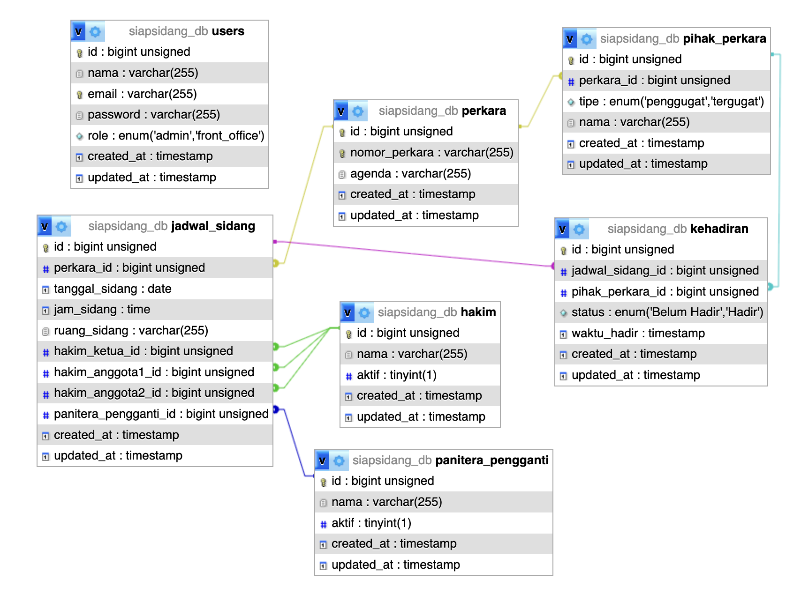

Project 1
Sistem Perpustakaan
Library Management System
This project digitalized a library system that was previously managed manually. I was responsible for the UI design, starting from analyzing user needs and directly moving into designing the final interface.
My Role: UI Designer
Design Process
User Needs Analysis
The design process began with a user needs analysis to understand how librarians and members interacted with the manual system.
Final UI Design
From there, I proceeded directly into designing the final user interface based on those findings.
Visual Language
The visual language for this interface uses Cormorant Garamond for headers and Plus Jakarta Sans for body content, paired with a color palette of deep navy and gold.
Color Palette
Typography
Sistem Perpustakaan
Cormorant Garamond · Header
Manage books, members, and loans
Plus Jakarta Sans · Body
Project 2
SIAP SIDANG
Sistem Informasi Presensi Sidang (Hearing Attendance Information System)
This project digitalized the hearing attendance process, which was previously recorded manually in a physical ledger book. I worked as a Full Stack Developer, handling both the front end and back end for the Admin and Front Office pages.
My Role: Web Developer responsible for both the front end and back end of the Admin and Front Office pages.
User Roles
01
Admin
Manages the CRUD operations for case numbers and hearing schedules, monitors attendance, and can create or delete records for judges and substitute court clerks.
02
Front Office
Monitors hearing schedules and manages attendance for the plaintiff and defendant parties.
03
Guest View
Accessible to judges, substitute clerks, and involved parties, allowing them to check hearing schedules and attendance status.
Database Design

zoom_in
Click to enlarge
Entity Relationship Diagram for the SIAP SIDANG Database
The SIAP SIDANG database is designed with seven main interrelated tables. The users table stores account data with two roles, admin and front office. The perkara table stores case numbers and agenda, which connects to the jadwal_sidang table to define the date, time, and room of each hearing, along with the assigned presiding judge, associate judges, and substitute clerk through the hakim and panitera_pengganti tables. The pihak_perkara table records the plaintiff and defendant for each case, while the kehadiran table records the attendance status of each party for a given hearing schedule. This structure allows the admin to manage case data, schedules, and judge panel assignments, while the front office monitors attendance in real time.